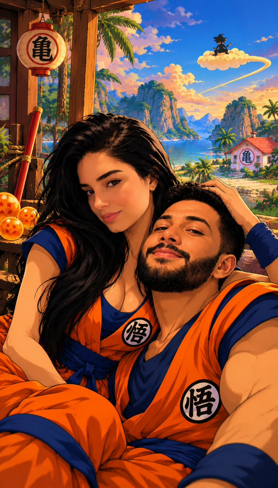

O melhor jogo
é viver nós dois.

Você foi escolhida para uma missão especial: descobrir todos os universos em que eu escolheria você. ♡
Feito para jogar com o dedo, no celular. As imagens são criações da nossa imaginação, não registros reais.
O dia em que tudo começou…
A primeira vez em que nos vimos foi dentro do seu carro. Nós dois tímidos, talvez sem saber direito o que dizer. E, sem perceber, estávamos começando a nossa história.
Daqui para frente, cada imagem é uma aventura que imaginamos juntos. Não são fotos de acontecimentos reais — são sonhos que ganham vida neste jogo. O sentimento, esse sim, é de verdade.
Você venceu.
Meu coração.
Você desbloqueou todos os nossos universos. Mas o melhor ainda não está nas imagens: está no que podemos viver de verdade.
A minha escolha é você. ♡
Meu amor,
Eu quis criar algo diferente para te mostrar o quanto você é especial para mim.
Nosso primeiro encontro não foi num castelo, nem numa aventura de cinema. Foi no seu carro, com dois tímidos tentando encontrar as palavras certas. E foi justamente isso que tornou aquele começo tão nosso.
As imagens deste jogo nasceram da nossa imaginação. São cenários, aventuras e possibilidades. Mas existe algo que não foi inventado: o carinho que sinto por você e a vontade de construir uma história bonita ao seu lado.
Se a vida tivesse mil fases, mil caminhos e mil universos, eu ainda escolheria jogar no mesmo time que você.
Obrigado por fazer parte da minha história. Eu amo você. ♡
Com todo o meu amor.